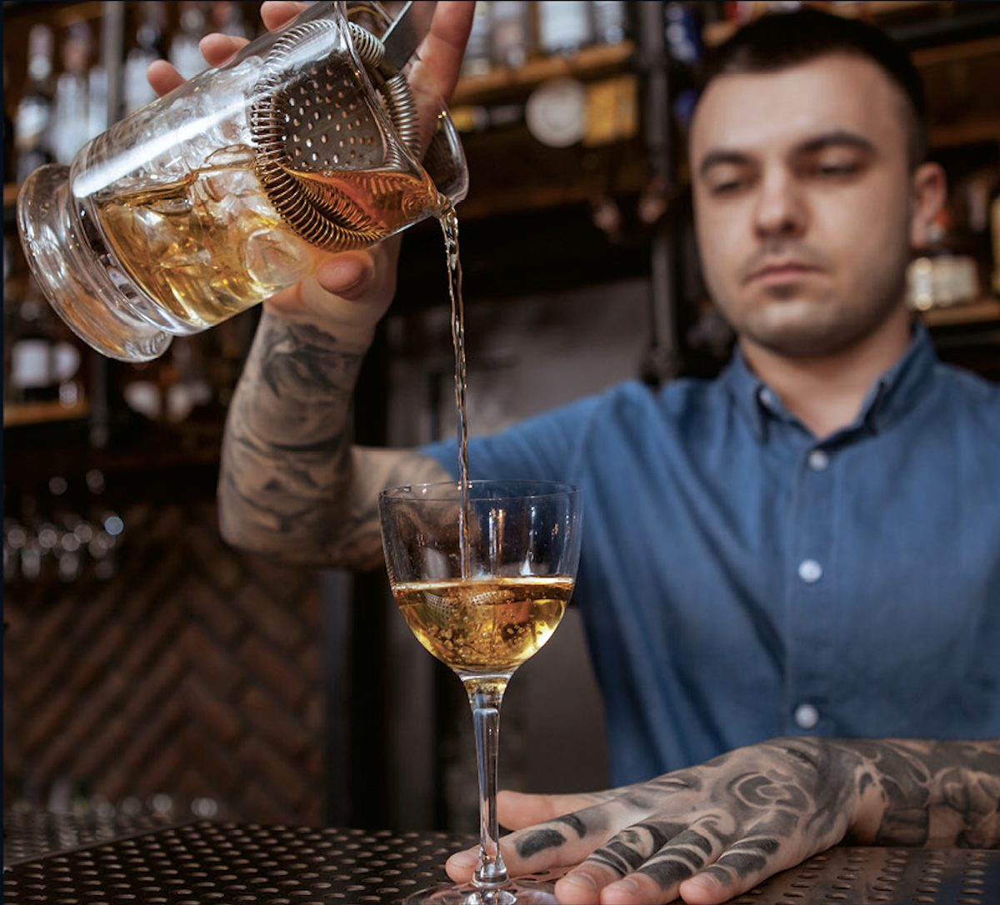
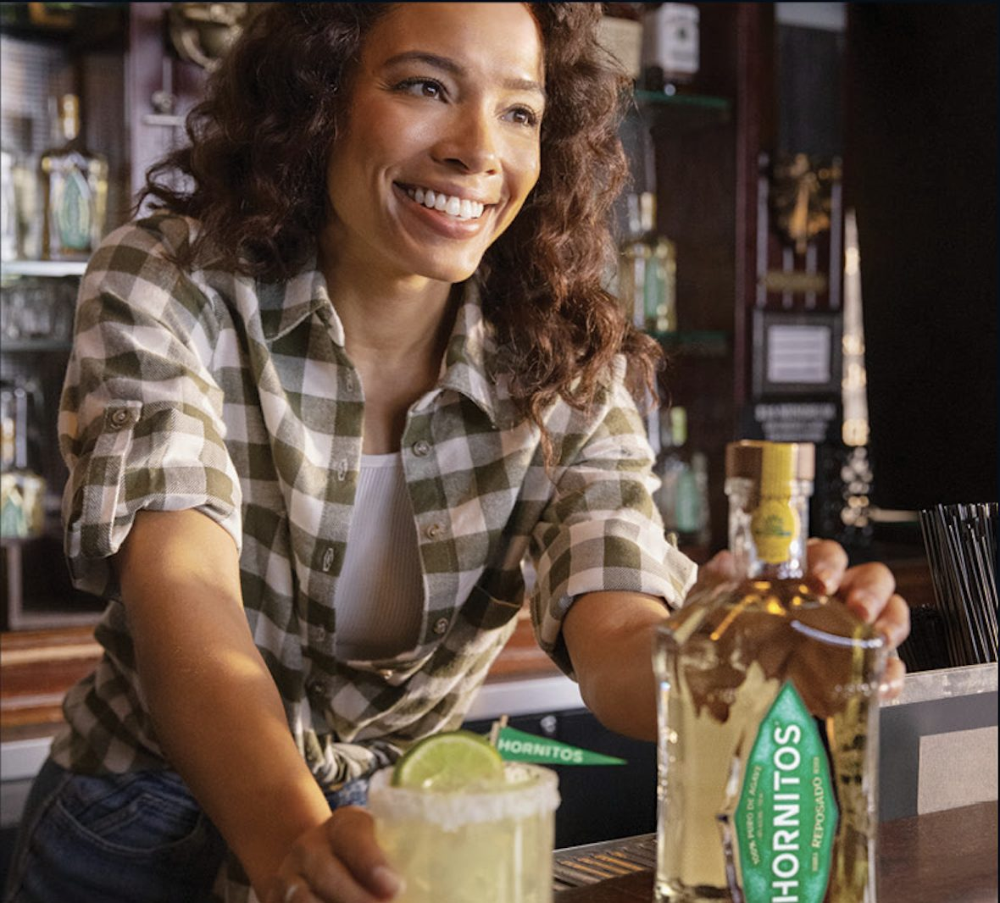
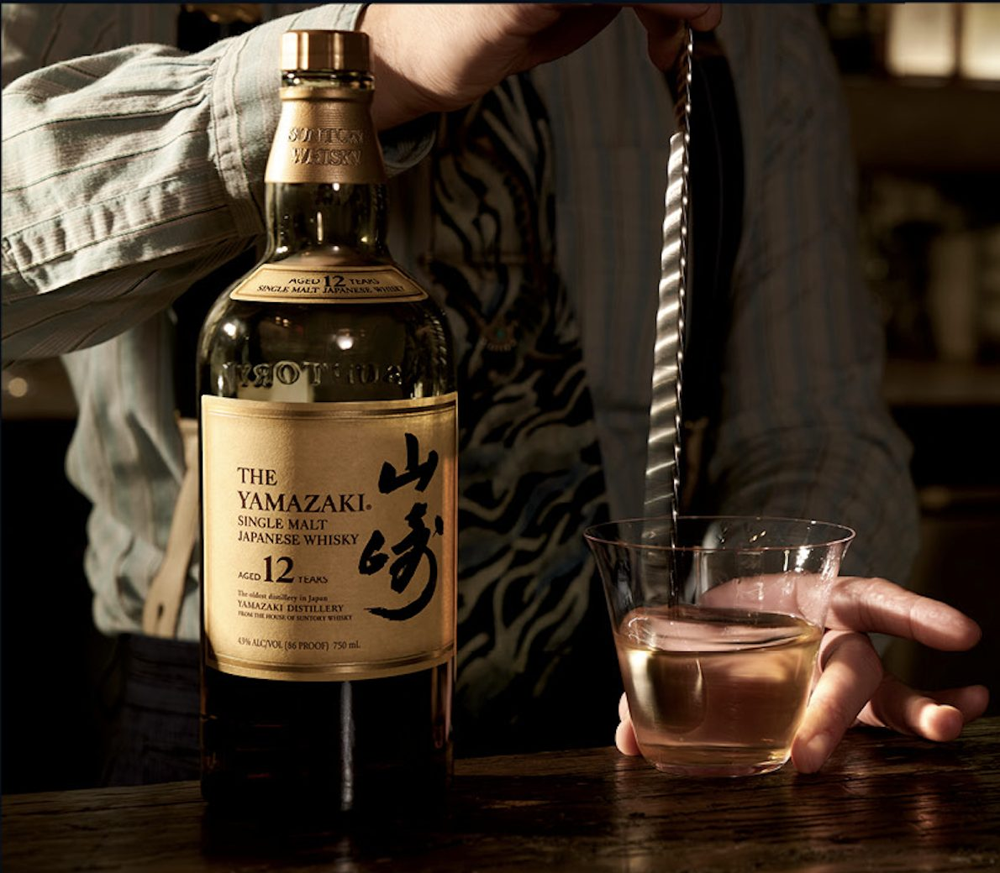

The bar is where cocktail culture begins and where it continues to evolve. Where technique is refined, standards are set, and flavor is shaped. From its origins in American cocktail culture to today’s leading bars experimenting with Suntory’s commitment to Japanese artistry, the craft is elevated through discipline, execution, and attention to detail. What happens here sets the standard, and today’s bartenders shape cocktails with precision, where every detail from the blend to the pour contributes to an incredible experience.

It begins with the pour.
Every movement is deliberate: Balance, timing, and technique come together in a moment that defines the drink before it ever reaches the glass.

It’s more than the cocktail.
The exchange, the timing, the atmosphere; what happens across the bar is what makes the moment.
At the bar, every detail matters—from the ice to the pour—shaping a drink that feels effortless, but never is.

In the Moment
Hibiki and Yamazaki appear in the world’s leading bars, where precision, craft, and setting come together to define how superior, authentic Japanese whisky is experienced.